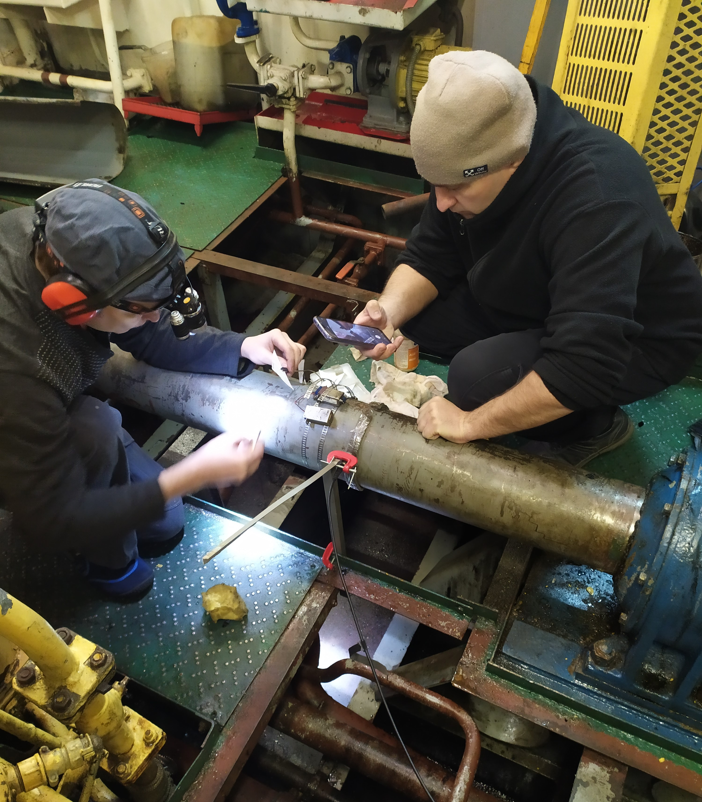
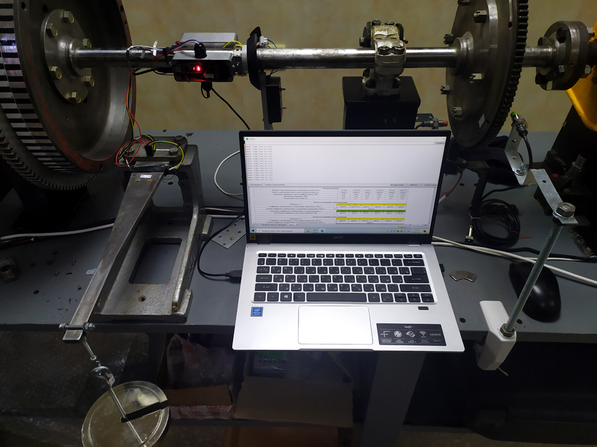
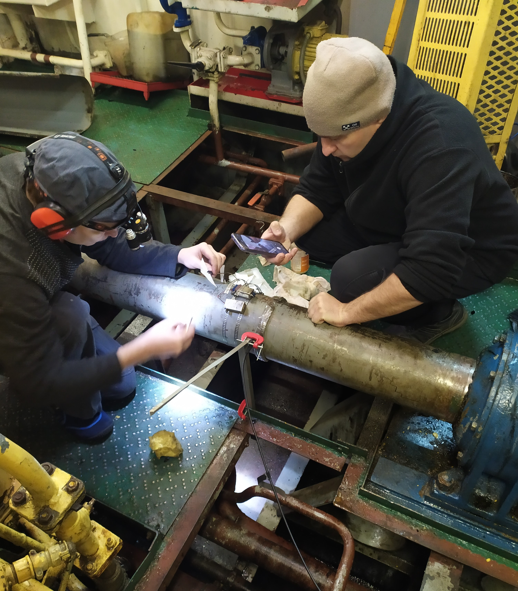
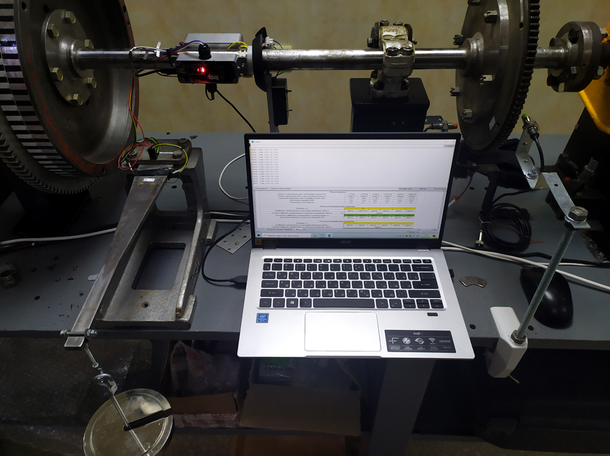

Услуги/Заявки
ИЦ «MTS» проводит испытания, закрепленные областью своей аккредитации, осуществляя при этом:
- измерения крутильных колебаний судовых валопроводов главных энергетических установок и вспомогательных агрегатов
- определение амплитуд крутильных колебаний, напряжении от крутильных колебаний
- проведение виброакустических измерений и испытаний
- измерение параметров вибрации корпуса, судовых технических средств и оборудования на судах и плавучих объектах
- измерение параметров крутильных колебаний судовых движительных установок, двигателей, дизель-генераторных, дизель-редукторных, дизель-компрессорных и дизель-насосных агрегатов
- диагностику технического состояния демпферов крутильных колебаний
ИЦ «MTS» для осуществления работ согласно области аккредитации выполняет следующие функции:
- регистрирует и выдает заключения, протоколы испытаний в соответствии с областью аккредитации
- участвует в разработке нормативно-технической документации на программы и методики испытаний
- отменяет или приостанавливает действие выданных Центром заключений, протоколов, принимает участие в разработке корректирующих мероприятий
- обеспечивает обучение, в том числе повышение квалификации персонала
- обеспечивает информацией о результатах проведенных испытаний всех заинтересованных сторон
 


